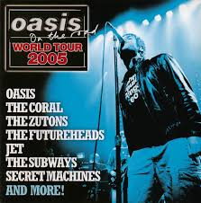

The Glory Years and demise of the band
The band were signed to Creation Records in 1993 by Alan McGee after seeing them play in Glasgow. In April 1994, their first single Supersonic was released and reached number 31 in the charts. Later that year in August, Live Forever became the band's first top 10 single. Their first album Definitely Maybe was released in 1994. Oasis were starting to make themselves known in 1995 within the music industry by winning a Brit award for best newcomers. In April 1995, drummer Tony McCarroll left the band and was replaced by Alan White.
In the October of the same year, their second album What's The Story (Morning Glory) is released and went to number one within a week of its' release. The record became the fastest selling album in the UK since Michael Jackson's album Bad. The band continued to set records during the following years.
Over the course of 1996, What's the Story(Morning Glory) became the second-biggest selling British album in history. With the success of the album, Oasis became popular in America. At the end of 1996 they were due fly over to the States for their first tour in the US but Liam and Noel's relationship was becoming worse. They were often in the press who presumed that the band were splitting up. Noel and Liam said that it was just a silly little argument between brothers but it led to them cancelling the tour of the States. In the summer of 1999 while concentrating on recording Standing On The Shoulder Of Giants, another founding member of the band decided to leave. Bonehead stated that he wanted to spend more time with his family. His departure added more fuel to the argument between the Gallagher brothers when Noel was interviewed about Bonehead's decision to leave the band. He said "It's hardly Paul McCartney leaving the Beatles" which didn't impress Liam and caused one their biggest arguments so far as Bonehead was one of Liam's best friends. The relationship between the brothers was getting worse as the years went by. In the fall of 2000, the band celebrated their monumental world tour playing in Asia, Europe and Notrh America. During this tour there were numerous press reports about Liam and Noel fighting and having to cancel some of their concerts.
A couple of years later after speculation that the band had split, they released Heathen Chemistry. While touring the States Noel and Andy Bell were injured in a car accident that led to fans thinkinhg that the rest of the tour was going to be cancelled. However two weeks later they were back touring again after only cancelling three of their concerts. Later that year while touring Germany, Liam and several members of the bands entourage were involved in a street fight in Munich. Liam suffered some quite bad facial injuies and was later arrested but despite all of these problems, the band completted the tour and the album reached Number 1 in the UK. During the next few years the band decided to have a break but were back in the studio in 2004 recording their next album Don't Believe The Truth. Not long after they started recording the album, drummer Alan White decided to quit the band leaving them without a drummer. They persuded Ringo Star's son Zak Starkey to climb on board and be a temporary member of the band. Don't Believe The Truth soon went on to become the band's highest selling album since Be Here Now.
In 2007 the band were back in the studio and recording their next and what would be their final studio album Dig Out Your Soul. The album was released in 2008 and was another number 1 hit. In 2009 while touring Europe Liam and Noel's feud became even more public. Nearly evry week there was something about them having heated arguments and fights in the papers. In August while touring France one night just before they were due to go on stage, they had a very heated argument and Noel decided that he had had enough of all of the arguing with Liam. He decided to pick up his guitar and leave the band. After Noel left the band, Liam and the rest of the band members decided to change the name of the band to Beady Eye and that was the end of Britain's biggest Rock and Roll band.